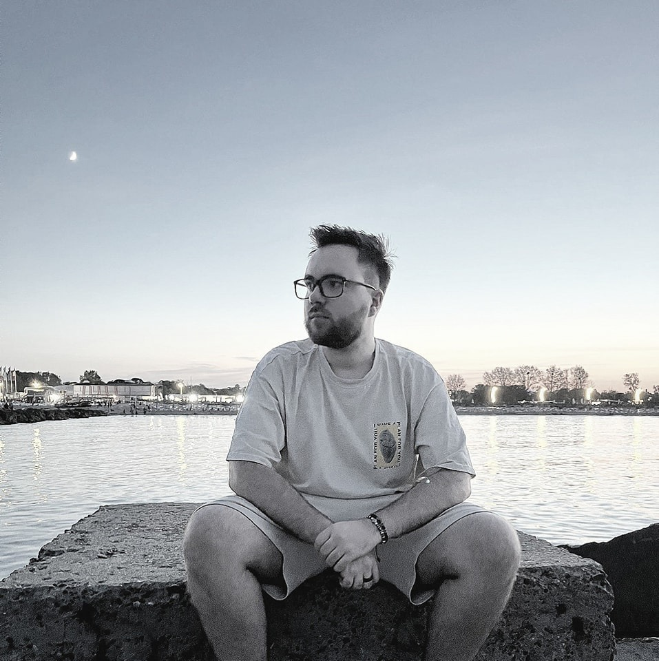

Career Objective
Motivated high school graduate who seeks to engage in the IT industry,in a Full Stack Web Developer role.
Prepared to learn and acquire necessary skills to grow in the industry.
Education
- High School: Liceul Teoretic "Miron Costin" Iasi (2016-2019)
- Filologie
- University: UAIC Iasi, F.E.A.A (2019-2023)
- Management
Skills
- Attention to detail
- Good social skills
- Teamwork oriented
- Passion towards learning and technology
About me
Contact